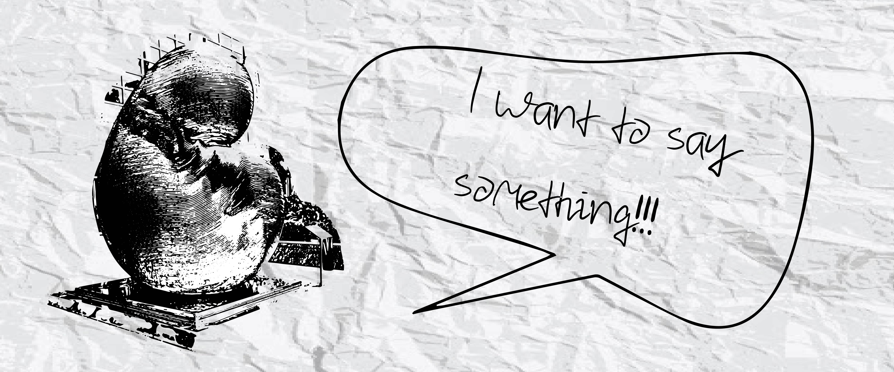

公共藝術之抱怨合集~你們都不認真聽我說話!!
在茶餘飯後之際，大家都喜歡做什麼呢?有些人會看電影、出去郊遊、一起吃飯，甚至是聊聊天說說最近的趣聞，想必每個人都會有喜歡做的事跟想說的話，那你有沒有想過公共藝術也有想說的話呢?他們每天風吹日曬，辛苦地站在那裏守護都市的民眾，想必應該也有很多怨言吧?!今天我們就來聽聽公共藝術到底想說什麼吧~
如魚得水:「那我先說好了，我是如魚得水，是魚!是魚!!是魚!!!上次到底是哪個小弟弟經過我時跟我說我像一坨衛生紙的?!!我可是高貴的魚，沒有魚，你們每天餐桌上哪來這麼多好料啊??」
posse to be able A&B:「首先我的名字是posse不是possible，怎麼會有人一天到晚念錯我的名字?這樣很失禮呢!!而且我一直在宣導地球能源的重要性，怎麼還有一堆人不隨手關燈、浪費紙、浪費水的，這真的很缺德喔!」
龍躍雲端:「呃....換我說吧~前面那位朋友的問題好像也有發生在我身上，我相信你們一定很常看到我，因為我每天都會表演漂亮的水舞秀，但我的名字真的不叫「水舞秀」，而是很帥氣的龍躍雲端，是龍的化身欸，再來順便說一下我也是公共藝術啦，因為好像很多人不知道的樣子，好了現在你們知道了就不要再叫錯了喔!」

無限生命:「我本來不想說的，但還是說一下好了，我也在台北101前面，而且跟LOVE也很近，但為什麼比較多人都去跟LOVE拍照，而不來跟我拍照啊?我是可愛的大寶寶欸，一定沒有人像我這麼可愛的啊，每次看到LOVE前面的人龍都很難過，嗚嗚我也想跟你們拍照啦~」
天地之間:「咦?連無限生命都說了，我也一定要說一下啊，你那個大寶寶的樣子明明就很多人跟你拍照啊，你這麼說那我怎麼辦?被龍躍雲端還有你們跟星月交輝夾在中間，連我是不是公共藝術都不知道，更不用說會來找我玩了，我每天都很無聊欸，不然你們來陪我玩啊?!!!」
呃......那個各位公共藝術好像有點太激動了，趁打起來之前我們今天先到這邊好了，其實我記得他們關係都不錯的，可能是太久沒抒發才會這樣啦!沒想到原來公共藝術也會抱怨吧~~